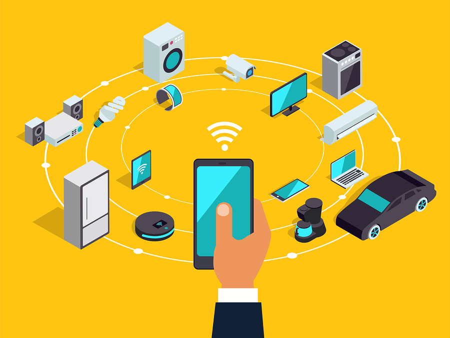
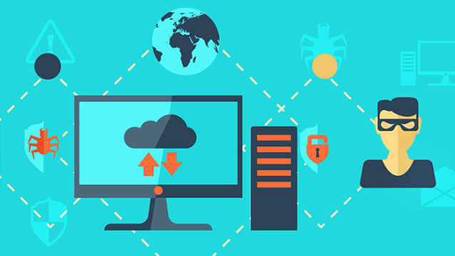

El Internet de las cosas es una red de dispositivos conectados que utilizan sensores y tecnología para comunicarse entre sí y con la nube. Gracias a los avances en chips de bajo costo y telecomunicaciones de alta velocidad, dispositivos cotidianos como cepillos de dientes, aspiradoras y automóviles pueden recopilar datos y responder inteligentemente a los usuarios. Este ecosistema integra objetos comunes con Internet, con el fin de facilitar una interacción más eficiente y automatizada en la vida diaria.
El concepto comenzó en los años 90, cuando los ingenieros empezaron a agregar sensores y procesadores a objetos cotidianos. Inicialmente, el progreso fue lento debido al tamaño y costo elevado de los chips informáticos, como las etiquetas RFID, que se usaban para rastrear equipos costosos. Con el tiempo, los avances en la miniaturización y potencia de los dispositivos informáticos hicieron posible crear chips más pequeños, rápidos y económicos, impulsando la integración masiva de tecnología en objetos comunes.
Hoy en día, el costo de agregar capacidad de cómputo a objetos pequeños se ha reducido drásticamente, permitiendo, por ejemplo, que interruptores de luz puedan incorporar conectividad y servicios como Alexa con menos de 1 MB de RAM. Esto ha dado lugar a un sector dedicado a llenar hogares, oficinas y empresas con dispositivos inteligentes que transmiten datos automáticamente a través de Internet. Esta red de "computación invisible" conforma el Internet de las cosas, transformando la forma en que interactuamos con nuestro entorno.
Los sensores detectan cambios en el entorno (como temperatura, luz o movimiento) y los actuadores generan respuestas físicas (como abrir una válvula o encender un motor). Estos dispositivos son fundamentales en el IoT, ya que permiten que las máquinas interactúen con el mundo físico y habilitan la automatización al trabajar de forma coordinada.
Los dispositivos IoT se conectan a Internet mediante tecnologías como Wi-Fi, Bluetooth, redes celulares, Zigbee o LoRaWAN. Estas tecnologías son necesarias para transmitir datos entre sensores, actuadores y la nube.
La nube proporciona la infraestructura para almacenar, procesar y analizar los datos generados por los dispositivos IoT. Además, ofrece herramientas para desarrollar e implementar aplicaciones IoT de una forma más eficiente y escalable.
Las herramientas de análisis avanzadas, como algoritmos de aprendizaje automático y visualización de datos, permiten extraer información valiosa y patrones de los grandes volúmenes de datos generados por el IoT. Estas herramientas también habilitan la toma de decisiones predictivas.
Para proteger los dispositivos IoT y los datos que generan, se utilizan medidas como la encriptación, controles de acceso y sistemas de detección de intrusos, asegurando la privacidad y mitigando amenazas cibernéticas.
Los dispositivos IoT permiten supervisar a los pacientes de forma remota, recopilando datos en tiempo real sobre signos vitales como frecuencia cardíaca y presión arterial. Estos datos se analizan para prevenir problemas de salud graves. También se utilizan para rastrear equipos médicos, gestionar inventarios y monitorear el cumplimiento de medicamentos.
En el sector industrial, el IoT supervisa el rendimiento de máquinas, detecta fallos y optimiza la producción. Sensores controlan condiciones como temperatura y humedad, mejorando la calidad del producto. Además, gestiona inventarios, cadenas de suministro y calidad de productos terminados.
El IoT analiza el comportamiento de los clientes, supervisa inventarios y optimiza la distribución en tiendas. Con sensores se rastrea el tráfico peatonal y comportamiento del cliente, mejorando la experiencia de compra y la colocación de productos. También facilita la gestión de cadenas de suministro y envíos.
Los sensores IoT monitorean condiciones del suelo, clima y crecimiento de cultivos. Ayudan a optimizar el riego midiendo la humedad del suelo y supervisan el estado del ganado y equipos. Los dispositivos de baja potencia o energía solar funcionan eficazmente en áreas remotas.
El IoT supervisa el rendimiento de vehículos, optimiza rutas y monitorea envíos. Los sensores miden la eficiencia del combustible y la condición de la carga, asegurando sostenibilidad, menores costos y entregas en condiciones óptimas.
El IoT ofrece grandes beneficios, pero también enfrenta riesgos y desafíos importantes:
Riesgos de seguridad y privacidad: Los dispositivos IoT suelen tener medidas de seguridad limitadas, lo que los convierte en objetivos fáciles para los piratas informáticos. Una vez comprometidos, estos dispositivos pueden ser utilizados para ataques más amplios, como redes de bots o acceso no autorizado a sistemas críticos. Además, la recopilación masiva de datos personales por parte de dispositivos como cámaras, asistentes de voz o dispositivos de salud puede resultar en violaciones de privacidad si estos datos no se protegen adecuadamente. Las empresas y usuarios deben implementar medidas de encriptación y protocolos seguros para reducir estos riesgos.
Problemas de interoperabilidad: La falta de estándares universales en el IoT lleva a que los dispositivos de diferentes fabricantes no puedan comunicarse fácilmente entre sí. Esto limita la integración en ecosistemas más amplios y puede obstaculizar la funcionalidad esperada de un sistema IoT. Por ejemplo, en un hogar inteligente, un termostato de un fabricante puede no ser compatible con sensores o asistentes de voz de otros. Esto obliga a las empresas a desarrollar soluciones personalizadas, aumentando costos y complejidad.
Sobrecarga de datos: Los dispositivos IoT generan cantidades masivas de datos en tiempo real, desde registros de temperatura hasta datos sobre patrones de uso de usuarios. Sin una infraestructura adecuada para almacenar y procesar estos datos, las empresas pueden verse desbordadas. Además, la extracción de insights significativos requiere herramientas avanzadas como big data analytics, inteligencia artificial y aprendizaje automático, las cuales no siempre están disponibles para todas las empresas.
Costo y complejidad: La implementación de sistemas IoT implica gastos iniciales elevados en hardware, como sensores, y en software para la conectividad y análisis de datos. También requiere redes robustas para manejar la conectividad constante y equipos capacitados para diseñar, implementar y mantener estos sistemas. Además, la actualización o sustitución de dispositivos obsoletos agrega costos continuos, dificultando la adopción para pequeñas y medianas empresas.
Desafíos regulatorios y legales: Las leyes de privacidad y ciberseguridad, como el Reglamento General de Protección de Datos (GDPR) en Europa, exigen que las empresas protejan los datos personales recopilados por dispositivos IoT. Sin embargo, cumplir con estas regulaciones puede ser complicado, especialmente para empresas que operan a nivel global. Además, la ausencia de normativas específicas para IoT en muchos países deja vacíos legales, creando incertidumbre sobre la responsabilidad en caso de incidentes de seguridad o mal uso de datos.
